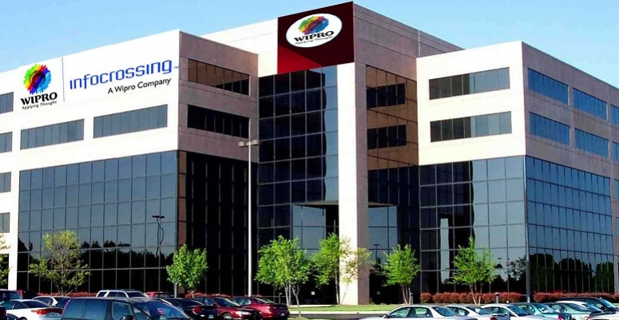
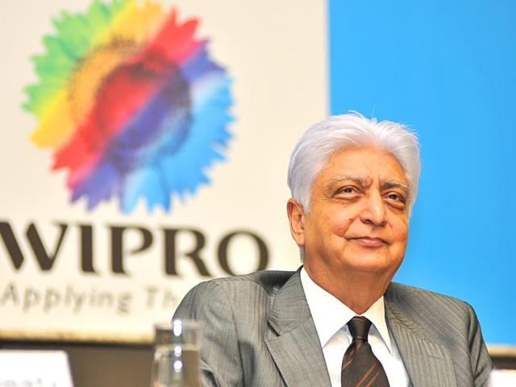
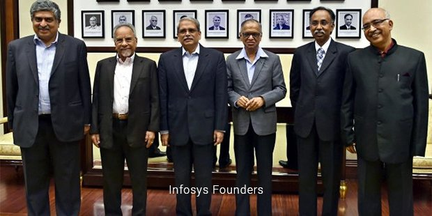
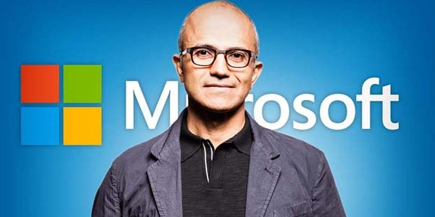
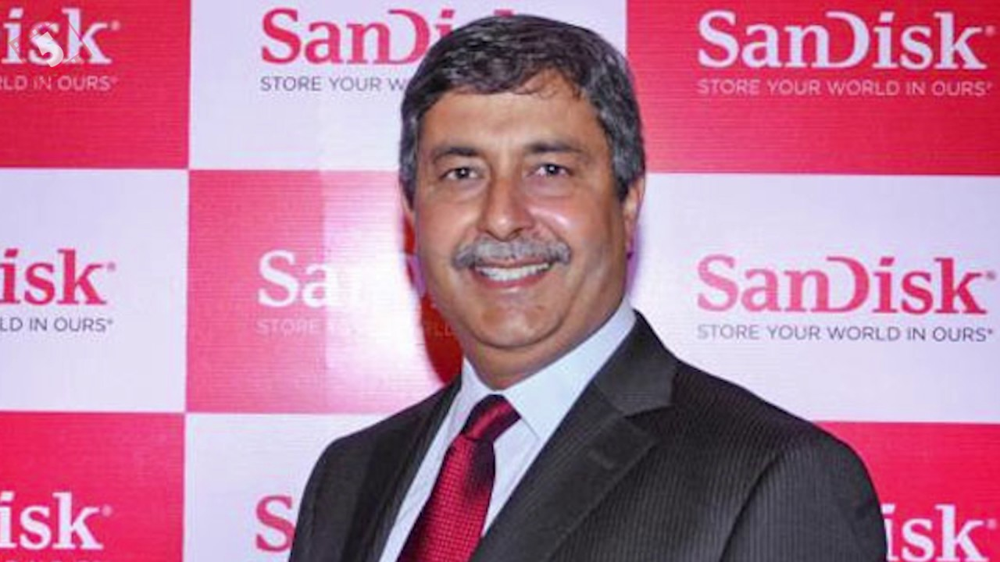

Information technology in India is an industry consisting of two major components: IT services and business process outsourcing (BPO).[1] The sector has increased its contribution to India's GDP from 1.2% in 1998 to 7.7% in 2017.[2]According to NASSCOM, the sector aggregated revenues of US$160 billion in 2017,[3][4] with export revenue standing at US$99 billion and domestic revenue at US$48 billion, growing by over 13%. USA accounts for more than 60 per cent of Indian IT exports.[5]

Tata Consultancy Services
Western India Vegetable Products Limited
Information tech. and outsourcing services
Hindustan Computer LimitedL
IT Before & After
Information technology in India is an industry consisting of two major components: IT services and business process outsourcing (BPO).[1] The sector has increased its contribution to India's GDP from 1.2% in 1998 to 7.7% in 2017.[2]According to NASSCOM, the sector aggregated revenues of US$160 billion in 2017,[3][4] with export revenue standing at US$99 billion and domestic revenue at US$48 billion, growing by over 13%. USA accounts for more than 60 per cent of Indian IT exports.[5]
IT Before 100 Years
IT After 100 Years
Indian IT Company Founder
Information technology in India is an industry consisting of two major components: IT services and business process outsourcing (BPO).[1] The sector has increased its contribution to India's GDP from 1.2% in 1998 to 7.7% in 2017.[2]According to NASSCOM, the sector aggregated revenues of US$160 billion in 2017,[3][4] with export revenue standing at US$99 billion and domestic revenue at US$48 billion, growing by over 13%. USA accounts for more than 60 per cent of Indian IT exports.[5]


JRD Tata
Mohamed Premji
Nandan Nilekani
Shiv Nadar
Indian IT Company Founder
Information technology in India is an industry consisting of two major components: IT services and business process outsourcing (BPO).[1] The sector has increased its contribution to India's GDP from 1.2% in 1998 to 7.7% in 2017.[2]According to NASSCOM, the sector aggregated revenues of US$160 billion in 2017,[3][4] with export revenue standing at US$99 billion and domestic revenue at US$48 billion, growing by over 13%. USA accounts for more than 60 per cent of Indian IT exports.[5]


sundar pichai
Satya Nadella
Sanjay Mehrotra
Ivan Menezes
Indian & International IT Webdeveloper
Information technology in India is an industry consisting of two major components: IT services and business process outsourcing (BPO).[1] The sector has increased its contribution to India's GDP from 1.2% in 1998 to 7.7% in 2017.[2]According to NASSCOM, the sector aggregated revenues of US$160 billion in 2017,[3][4] with export revenue standing at US$99 billion and domestic revenue at US$48 billion, growing by over 13%. USA accounts for more than 60 per cent of Indian IT exports.[5]
Manzar HUssain
Sarah Parmenter
Dan Cederholm
Rachel Andrew
International IT Company Founder
Information technology in India is an industry consisting of two major components: IT services and business process outsourcing (BPO).[1] The sector has increased its contribution to India's GDP from 1.2% in 1998 to 7.7% in 2017.[2]According to NASSCOM, the sector aggregated revenues of US$160 billion in 2017,[3][4] with export revenue standing at US$99 billion and domestic revenue at US$48 billion, growing by over 13%. USA accounts for more than 60 per cent of Indian IT exports.[5]